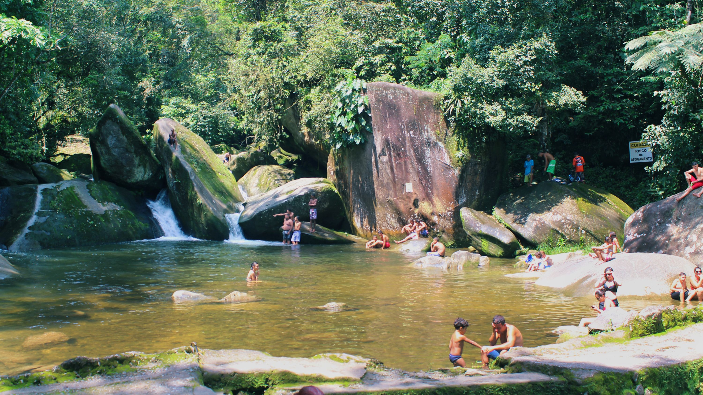
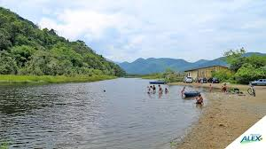

História
Origens e Colonização
Antes da chegada dos portugueses, a região era habitada pelos índios Guaranis. No século XVI, com a fundação da Vila de São Vicente por Martim Afonso de Sousa, Mongaguá passou a ser um ponto de passagem para viajantes e jesuítas que subiam e desciam a costa. Durante séculos, a área permaneceu como um local de sesmarias e pequenas propriedades rurais, onde o cultivo de subsistência e a pesca eram as principais atividades.
O Século XX e o Desenvolvimento
O grande salto no desenvolvimento de Mongaguá aconteceu no início do século XX, impulsionado por dois fatores principais:
A Estrada de Ferro: A construção da linha férrea da Southern San Paulo Railway (posteriormente Sorocabana) facilitou o acesso à região, conectando o litoral ao Planalto.
O Loteamento: Nas décadas de 40 e 50, grandes proprietários de terra começaram a lotear suas fazendas para a construção de casas de veraneio. Foi nessa época que o perfil da cidade começou a mudar de rural para turístico.
A Emancipação Política
Por muito tempo, Mongaguá foi um distrito pertencente a Itanhaém (e anteriormente a São Vicente). O desejo de autonomia cresceu entre os moradores e veranistas, culminando no plebiscito que garantiu sua emancipação.
Data Histórica: Mongaguá foi oficialmente elevada à categoria de município em 7 de dezembro de 1959.
Mongaguá Hoje: Turismo e Natureza
Atualmente, a cidade é um dos destinos mais procurados da Baixada Santista, equilibrando sua infraestrutura urbana com vastas áreas de preservação ambiental. Alguns dos seus maiores destaques históricos e culturais incluem:
Plataforma de Pesca: Uma das maiores da América Latina, avançando 400 metros mar adentro.

Poço das Antas: Um dos pontos turísticos mais antigos, famoso por suas quedas d'água e piscinas naturais.

Aldeia Indígena Aguapeú: Mantém viva a memória dos primeiros habitantes da região, preservando a cultura e o artesanato Guarani.
